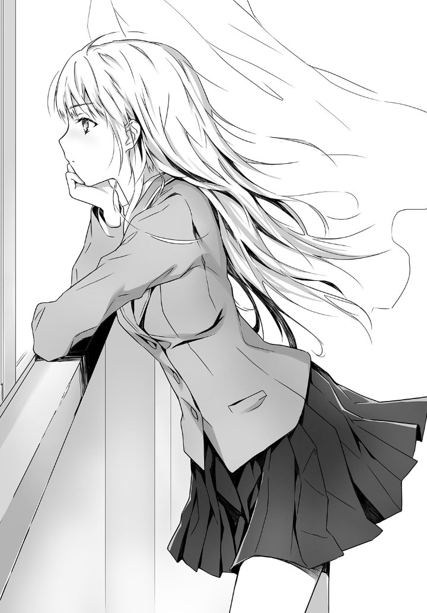
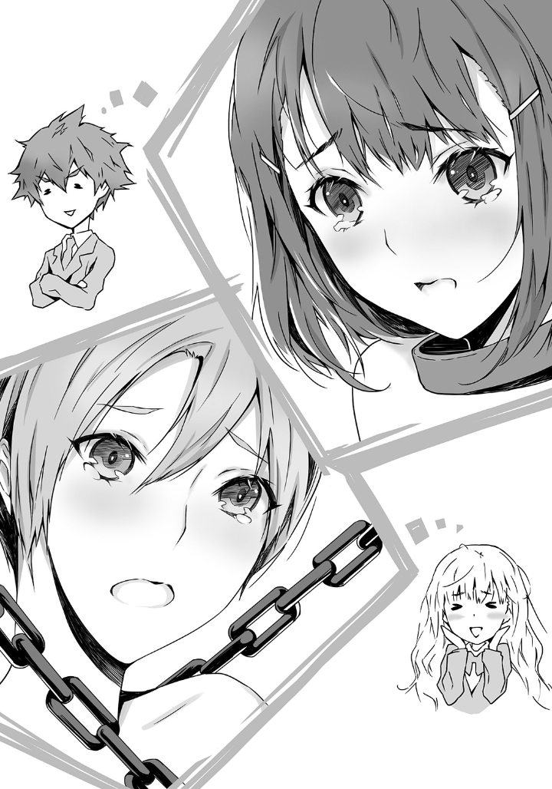

Chapter 1: Violin Angel and Flute Fairy. And We Who are Unscrupulous
I heard a sweet and painful sigh from my side the attractiveness of her face turned my gaze to the side.
"Hot..."
The deep blue eyes like lapis lazuli, the smooth cheeks that's almost like a stone, the blonde girl wandering her eyes at the side of the window, is actually the most famous girl in school.
"Aimoto Lucia! No way, Are you also?"
Looking at her with surprised look, the woman, who is rumored to be talented woman and the most beautiful in the school, asked her in a confirming tone.
"I dont know who you are but, that sly, and beasty eyes of yours, Is it possible that you are also?"
◇ ◇ ◇
When I say that I'm an art member, my friends in junior high school and my current classmates are all surprised.
"Eh! Daiki is in the art club !?"
"You of all person who supposed to draw a apple or orange, will eventually become durian!"
"And also when we were drawing about scenery, daiki draw that as sloppy horror house and you're even try to join art club?"
I suddenly feel eyes were surrounding me.
"Does all students need to be have in club in your school? Or did you choose art club because it's looks relaxing and fun?"
"I see, so you're only a ghost member, who only join to hangout without doing anything, You're not drawing or carving anything right?"
"I only go to art room to read manga and to take a nap, that's all."
It seems that satisfied them, to them they think that me of all people who join to art club is extremely shocking.
I didn't even try to argue because it's really troublesome.
"So, how is it...?"
I am also aware that my artistic sense is completely lost because I already notice my grade in elementary school is flying downward.
I guess the teacher couldn't put it on because when I saw the paper sticky clay panda I made, the girl next in my seat was crying because of creepiness. It had three necks, eyes popped out, and the tip of its tongue was cracked.
Anyway, until the summer of my first year of high school, I belonged to the track and field club where practice was hard, and I had some trouble with my seniors, and after I quit there, I was in the home club all the time.
That's why, as of May, in my second year, as an art member, I always commute to the 4th building all the way to the club room after school.
I know, the art club member is a temporary figure. While pretending to rugged the table beside the window, I usually peek outside then doing the informal club activity that I was secretly doing.
The only and supreme part where I devote all of my 16-year-old burning passion.
"Appreciation" is to understand the aesthetic value of works of art and to fully enjoy them.
Therefore, for appreciation, the subject is necessary.
But for me, she shines more than any other work of art in the world. Misono, the subject of my appreciation, Chifuyu Misono a female member on the music club, which is just opposite the classroom, across the courtyard from the art room where I am making the indescribable objects.
A same as me, second-year student at Eureka High School, she's a neat, fair-skinned, petite, graceful, shy and serious girl with soft black hair that sways under her shoulders.
When I saw her for the first time, I was so impressed that there was a girl in the world who was so thin, and cute at the same time. Eventually make me conscious for her dreams and ideals.
When the day of my exam, I catch a cold with diarrhea that made me stay at my bed for a whole day.
By the way, Eureka High School is totally far away from my home, it will took an hour and a half by train from my house. However, Because of misono's lovely and shyness characteristic, even that hardships of such a long and cramped school attendance time are blown away in an instant, because the smiles that look bit embarrassed, the cheeks that are dyed in cherry blossoms, and the lips like cherries. The spilling, whispering little voice, and the modest, softly bowing gestures were all in the middle of my strike zone.
Then I checked the name, grade, and class at once, and found out that Misono had been learning the flute since she was a kid and belonged to the music club.
During club activities, Misono is always sitting by the window and practicing the flute.
I want to stare at that pretty and merciful face for as long as possible. I always praise each embarrassing facial expressions, and the beautiful gestures, that heal my hardships.
However, in order to enter the music club, you must have a background in musical instruments. However, the only things I've touched are recorders and pianica.
Besides, if a man like me join in the same club, My eyes that is full of passionate love will only scare Misono, who is as delicate as snow.
Nope! That's not very good.
But, How can I make the person I really want the most notice my feelings?
Because of adorable whorls and delicate necks, humble but pretty little breasts, fragile hips, and slender legs peeking out in skirts, me who can only stare at them will eventually scare her right!? What should I do?
While commuting to school from home for an hour and a half, the only conclusion I can squeezed in my head was to join the art club.
When I was about to join from art club I usually peek through window, even not being a member yet.
Through the window across the courtyard, Misono gently pressed her pretty cherry-colored lips against the silver flute, and the moment I saw Misono with her eyes down, I myself, trembled from the core of my body that my eyesight was in a miraculous area far beyond 2.0.
You can fully "appreciate" Misono's embarrassingly dyeing cheeks when she fails to play, and when he blows well, his neat lips are slightly loosened and smiles happily.
In this way, I set up an appreciation club by myself with the art staff as a cover.
In short, the appreciation club is a department where you can look at and enjoy beautiful paintings to your heart's content.
However, the absolute rule that I decided is, in order to prevent the president, knowing my true objective, I decided to only "stare" from a distance.
If ever I cross the line and give Misono a sense of danger and disgust, it will not be a sacred club activity, but just a disgusting stalker.
Club activities require not only fun but also endurance. Since art club originally had a small number of members, and the other members who came only came to do greetings on the first day to the new members of the club and eventually left the first years to do the job.
"Uh."
T
herefore, you can work hard at the activities of the appreciation club without being interfered by the surroundings.
Today, again, while kneading clay in the special seat facing the courtyard, we will appreciate the most adorable, gentle, and pretty things in the world.
After all, the place where Misono's pure lips touch the cool silver flute, she blow it too hard and her cheeks turned dyed pink because of embarrassment.
Oh, did something go wrong? Her eyebrows have dropped a little! Since her cheeks were white, it's easy to understand that her cheeks are getting redder and redder. Misono's embarrassed face is really the best.
I want to bully you more and more and make you look like you're about to crying.
You can't escape from the title being sadistic when you're peeping at your favorite girl in this way.
The delusion in my head deliberately said terrible things to Misono.
Me in a casual attitude, and Misono was crying in his eyes, staring at me with her teary eyes, whispering in a thin, small voice.
――Daiki-kun, You're so meanie.
――Don't bully me so much …… Please.
――No, it's ... embarrassing. Daiki-kun.
Oh, Misono's erotic crying face. It’s the best.
Of course, I don't want to make the real Misono cry
When a female member of music club accidentally hits Misono's shoulder, she suddenly looks nervous and worried about what happened. When I seen that face of her, I open the window and almost yell.
"Stupid! Be careful!"
I almost shouted.
Anyone who hurt, scares, or makes Misono sad is absolutely unforgivable. Including myself.
However, the fact that misono treamble with teary eye, make a delusion in my head being her shield.
Come to think of it, when I was in kindergarten, I used to chase the girl I liked with caterpillars and make her cry.
That girl crying face was awesome.
I'm sure I've had that kind of fetish since I was a child.
――What a sadistic.
You can't escape from the title of being S when you're peeping at your favorite girl, even if it's a pervert, I won't be ashamed or depressed from it.
Well, it would be a big problem if you show you're true self, as sadistic to other. But even so, I'm still proud. But what would I do when I can't hide my sadistic side anymore?
"Sigh."
Next to me, I heard a similar sad sigh.
"hmm?"
When I turned my gaze to the side, a flashy blonde schoolgirl was sighing with her cheek on the window sill right next to me.
Rich platinum-gold hair runs down from the shoulders to the waist, like a shining torrent of gold. The skin is white and cool like marble, it seems to be slippery, and the face with high quality parts such as clear double eyelids, strong nose, and sensual red lips is also embedded. It ’s very gorgeous.
Since she leans forward, the goodness of his style, such as his big breasts, thin hips, and well-shaped hips, is being emphasized more and more.
The eyes were deep blue like lapis lazuli, gazed hotly at the school building through the window.
The woman beside me tells me that she has annoying presence that can't be ignored.
Half japanese blood, blonde and blue eyes, the grades are top and well-behaved, the personality is deligent and cool, and it is called the most beautiful and talented woman in school. Yes, but it doesn't matter to me.
Woman with beautiful face and smart personality is not my type after all.

If art club members were practicing right now, she wouldn't be here, however
"No way?! Aimoto Lucia are you also?!"
As I was breathlessly staring at her, the sparkling lapis lazuli eyes looked at me as if to blame.
Then, she asked me in a slightly cold-hearted, arrogant tone.
"I dont know who you are but, that sly, and beasty eyes of yours, Is it possible that you are also?"
My guess was right!
No other members have come to the art room yet, just me and Lucia Aimoto.
We glared at each other in a threatening manner, and at the same time opened our mouths.
"Are you in love with Misono!"
"Are you also aiming for Shinobu Hisatake?"
Lucia is stunned. Me too? That kind of face she's in right now.
"Who is Shinobi?"
"Who is Misono?"
Again, the voices overlap.
"You're a pervert with a criminal look, don't you know Shinobu-kun? the second year, music club, Ogasawara Shinobu-kun. The appearance of him playing the violin is the most beautiful.
"You pervert with the eyes of criminal. The second year, music club, Chifuyu Misono. You don't know that she's beautiful and graceful when playing a flute."
"No, Shinobu-kun is better. The delicate, but pure and lovely violin angel."
"Nope, the neat, pure, healthy and shy, flute fairy is better."
"Shinobu-kun"
"It's Misono"
They approached each other's foreheads so close that they seemed to stick to each other, clenching their teeth and glared at each other.
Lucia also made her lips into a letter
"In short, you didn't look at Shinobu-kun in an sadistic way, right?"
"I'm not a gay. You also don't see Misono in that way right?"
"I'm not a lesbian"
Lucia lifts her golden eyebrows and denies it.
"I like pure, polite and cute boys. Like Shinobu-kun."
"I also like girls who are graceful, weak and innocent. Like Misono."
"Then, you weren't stalking about Shinobu-kun, but you were stalking about Misono-san. From here, you can peep into the music room. It's a great view for stalker king like you."
"Stalker king? Get embarrassed, you fake honor student."
Lucia frowned as I laughed.
"Then, what are you doing here? Are you pretending doing club activities while peeping? You ugly stalker king."
"No, it's not pretending, I'm purely working on club activities here, but for the appreciation club."
"Spikenard club?"
Lucia frowns further.
"What is that?"
"It's not a work of art,"its art appreciation for Misono."
I explained the activities of the appreciation club and the absolute rules. It's not just a stalking. Appreciation is a more stoic act that tests one's reason and personality.
Lucia shut her mouth and listened to my words with a graceful face.
"I was disappointed"
Say in a cool voice.
"But it's wonderful."
Her lapis lazuli eyes shine strongly, and she look at me with her declarated eyes.
"I will join the appreciation club, too."
What!?
◇ ◇ ◇
After a week–
At first, I didn't feel comfortable joining Lucia because such people would hinder the activities or more like my activity.
"I can't imagine your painful face even a millimeter if I look at Shinobu-kun's clean appearance.
"I can also shut out loud for Misono's pretty appearance."
"If so, there is no problem."
"Oh, this isn't the case"
I was doing my activities while Lucia carried the chair in front of the window, put a sketchbook on her knees, and she started drawing with charcoal, while gazing at the other side of the window.
For about two days, they ignored each other's existence, but probably because they were similar to each other, they started to exchange words naturally.
"Today, Shinobu-kun's skin is shining brightly like a transparent ball, if you splash it with a water, it will surely repel it."
"Mizono's black hair also seems to be more soft and glossy. Each one is like a delicate lacquer black silk thread."
"I'm glad I had more than 2.0 eyesight."
"I also eat spinach and natto every day and try to maintain this miracle of my eyes."
While facing each other's windows, they exchange word quietly.
Daiki is sculpturing clay while Lucia is sketching in his sketchbook, but both of their faces are in complete poker face.
In art club, Lucia who joined and reputed to be the most beautiful and talented woman in the school is currently doing what she like, like her sketchbook was full of drawn corpse, and melted slime.
"Sanada-kun? Sometimes, I do wonder what are you making? Is it internal organs of a pig that was hit by a car and scattered."
"Have you ever seen an internal organs of a pig? This is Misono. What about that? Is it a human cushion made from hell?
"Have you ever seen a human cushion from hell? This is Shinobu-kun."
Lucia answers calmly.
Apparently, when I hear Lucia's words that the absolute innocent angel and the purest supreme beauty in the world that she's talking about, is actually a boy.
"When I see Shinobu-kun at the beginning of the new semester when the cherry blossom petals started, is walking down the hallway in the school, I heard a lovely scream and with tears in his eyes."
"Go, go, cockroach." -, Shinobu-kun was trembling like a squirrel. I knocked down the cockroach and stepped on it with my feet. Shinobu-kun was looking up at me with a deep blue face. Wow. I couldn't make a voice because I couldn't recover from the shock of the cockroach. I walked away without saying anything, and my pretty eyes got wet with his teary eyes face. I remembered that my heart was ringing like a bell, and that night I wrote it in my diary with a title. "I met the ideal angel."
I wonder who cleanup that thing that Lucia stepped on…
According to Lucia, the boy who is scared from an insect is actually one source of Moe.
At the window of the music room, Shinobu Ogasawara, who tilts his small face elegantly and moves the bow of the violin, the lapis lazuli eyes of her, burns and sighs enchantedly.
"Oh, Shinobu-kun. I want that pretty face of yours fill with fear and pain. I want to make you cry with my cold words."
The appearance of Lucia is talking with eyes closed like a noble or a golden goddess. Even the deep compassion is felt from her words, the content is terrible.
"I want to block Shinobu-kun's nose and mouth and hold your breath, I want to see Shinobu-kun face, suffering and fluttering with his thin limbs, looking up at me with tear-soaked eyes and pleading for mercy, I want to put a snail on that fine nape, I want to see the distorted face of Shinobu-kun, who is suffering from uncomfortable feeling."
"Lucia Aimoto. If you do that, you're surely fall from the queen spot of the school to a mad maniac."
Even if I pointed out calmly, she didn't seem to be ashamed.
"I don't need the title "Queen of the school". As Shakespeare says that roses smell beautiful even if you change their name, even if you change your name from Queen to Mad maniac, my beauty and intellect will not change.
"In addition, I know that my delusions are just something to enjoy, and I have self-control, I only talk like this because you're the only one I can tell Sanda-kun."
"Is it okay?"
"Ofcourse. It's as painful to admit that it's creepy, but I'm determined to my desires."
"That's right. We're the same. If you, Aimoto is a pervert, then I'm also a pervert."

"Yes, we are a pervert wearing a mantle to hide ourselves, and also a proud member of appreciation club."
"That's right."
Both the questioning voice and answering voice are cool and appealing, but it seems that warm empathy is about to bloom in there.
Lucia also glanced at me and seemed to have her lips slightly loosened.
"Sanada-kun, I heard you quarreled with your senior in the track and field club and retired because you protested about the first year being errand boy right?, You have a strong sense of justice. It's very surprising."
"I just didn't like the pink and penguins-printed T-shirt that my seniors wore at that time."
When she answered with his face facing towards me, Lucia squinted again and seemed to be smoldering.
Then, after a gentle silence, Lucia said.
"I've always thought that Shinobu-kun is only in my heart, but it's nice to have someone who can comprehend for who you are."
"I have continued the activities of the appreciation club alone, but doing it together with someone same as me is really good."
"It's fun to curse someone you like."
"Maybe I wanted someone to listen to my stalking story. Misono's embarrassingly dyed pink cheeks are pure. That cheek with teardrops are like crystals. Maybe I wanted to talk about it with someone."
"Mizono shrugs her body when she's nervous. I want to scare her more. I also want to put caterpillars on that silky hair."
"I want to lock Shinobu-kun in a custody and lock him in a black chain."
"I want to put a red collar on Misono's neck and make her cry."

We talk about the delusion of running into our heads, as if we were receiving impressions in front of the works of art that we see, with a refreshing feelings.
My chest is roaring and filled with hot feelings.
What a bliss!
"After all Misono is a flute fairy, no, a goddess."
"Shinobu-kun is a violin angel. No, the god who forms my world."
Each other squinted enchantedly. The glorious time that will confused both of them is about to happen.
When I woke up from my delusion, it happened.
Chifuyu Misono and Shinobu Ogasawara, who were enthusiastic about playing the flute and violin by the window of the music room opposite, suddenly shook their shoulders and raised their faces. Then
Misono went to look at Ogasawara.
Ogasawara with Misono
Staring at each other, the two of them turned down in a hurry at the same time, and then blushed.
Wait, What just happened....
I witnessed the whole story here in the window, and I was frozen.
Lucia is also stiff next to me.
Boys and girls in the same height of youth stare at each other, look away with a smile, and look down at each other, as if scene from a romance movie.
My chest rang.
No, it's just a coincidence.
There is no way that the two of them have a good relationship to each other.
Lucia, who is next to me and keeps silent with a stiff face, must thinking the same thing as me. I can clearly see the impatience and confusion that dominates Lucia and the pain in her chest that keeps tingling. Just my instincts tells me.
Please be a coincidence.
A wind blows. Ogasawara and Misono eyes didn't meet again, but–
Chifuyu Misono gently looked up at Shinobu Ogasawara, who played the violin in a depressed manner, and stared at it with shame.
Ogasawara sent a longing look to Misono, who gracefully turned his eyes down while playing the flute.
Only I and Lucia knew.
◇ ◇ ◇
Apparently, the Appreciation club is facing a serious crisis.
A few days later.
Lucia and I were getting more and more impatient.
Since that day when they first sensed the danger, Shinobu Ogasawara and Chifuyu Misono have looked at each other frequently.
At first, the timing was not right, and even if one of them was looking at the other, the other was often unaware of it. However, they gradually became able to sense the other's gaze, and when one of them looked at the other, the other looked up and their eyes often met.
They both shake each other's shoulders, andimmediately look away and down in embarrassment, and then glance up again.
Then they would repeatedly look at each other, blush, and slump down again.
Strange ...... I was supposed to love Misono's embarrassed expression more than any other person, but when Misono looked at Ogasawara with dyed cheeks, my heart ached.
Lucia, who was next to me with her sketchbook open, also stopped holding the charcoal and bit her lip wistfully.
"......"
Her fiery lapis lazuli eyes, seem to be on fire today.
And suddenly, Lucia opened her mouth.
".....Sanda-kun."
"What?"
"..........It's nothing."
◇ ◇ ◇
After a long period of averted eyes and anguished silence, Lucia murmured in a hard voice, "I'm sorry, I'm sorry, I'm sorry.
"Nothing," she said.
Then she began to add lines to his sketchbook, slapping the charcoal down with a brisk motion.
She bites her lip, stares at her sketchbook with downcast eyes, and continues to work with her hands as if she is putting all her energy into completing the painting.
I had been painting idly, looking out the window to admire Shinobu Ogasawara in the school building over there, and squinting entranced, but now I was staring intently only at my sketchbook, as if someone was telling me never to look in that direction.
I had failed to speak to Lucia.
When it was time for the school to close, we left the art room together.
The blackish sunset stains the schoolyard.
The two of us walk side by side in silence.
Lucia is staring at her feet. The air was cool, but my body felt sweaty.
Just outside the school gate
"......My house is over here."
Lucia mumbled something like that without looking at me, and was about to leave when I quickly reached out and grabbed her hand.
Lucia looks back at me, gritting her teeth, as I am about to startled by her thin wrist that looks as if it is about to break.
What are you doing? She stares at me accusingly.
The words that should have been spoken stopped in their throats again at the somewhat desperate, full of strength, timid expression on their faces, and after staring at each other for a moment, they said, "I'm sorry, I'm sorry, I'm sorry.
"Where are you apologizing about......."
He released her hand awkwardly.
Lucia looked down with a stiff face.
"What did I do that you should apologize for?"
I can't answer.
I can't answer.
I don't know what I'm doing.
Lucia kept looking away from me.
"Goodbye."
She says curtly and moves away.
I stood there as if I had grown roots on my feet.
What was Lucia trying to say in the clubroom?
It was fragile and painful words.
But in the end, I couldn't hear it all out.
The wind turned cold again.
I stared at the cold, shimmering torrent of golden hair as it disappeared across the blackened road, feeling the pain in my chest that continued to tingle.
◇ ◇ ◇
Next day break time.
When I was thinking about yesterday with my cheeks on my desk due to lack of sleep, I heard the voices of my classmates.
"You, ask him."
"No, No way."
"I can't believe Daiki and Aimoto are..."
Knowing that that they're talking about me and Lucia, I turn my head.
"Daiki, are you dating Aimoto Lucia?"
Huh?!
For a moment, my mind went blank.
What are these guys talking about?
Lucia and I are dating? It is impossible as eating a very hot curry with a lot of red pepper and Tom Yum Kung.
"There's a rumor going around that someone saw Daiki and Aimoto leaving school yesterday after school with their hands linked together."
"Wha-"
"The guys in the art club said they were sitting in the art room with their chairs right next to each other and talking in private."
"Yeah, that was definitely cheating."
After being appalled, I told myself to keep my cool.
"Aimoto and I are just friends in the same club, we don't have a special relationship, and we live in opposite directions, so there's no way we'd go to school together."
I explained.
His tone was blunt and his eyebrows were furrowed, so he might have sounded angry.
"Yes, that's right."
"It's impossible, isn't it? Aimoto is not interested in high school guys."
And the classmates agree with each other, pulling back their hips.
I, on the other hand, was still feeling uneasy and uneasy.
My heart was still aching and hazy.
Damn, did someone see me grab Lucia's hand yesterday? Did that lead to some outrageous rumor that Lucia and I were dating?
A civilian me, and Lucia, a beautiful, blonde woman, a celebrity at Eureka High School. The rumors must be spreading even more by now.
We have to do something about it.
I get up from my chair and head to Lucia's class.
But when I looked around the classroom, I didn't see that prominent blonde head. I had no choice but to leave, as wandering around too much might stir up rumors.
During the next recess and the next recess after that, I casually peeked into Lucia's classroom, but I still couldn't see her.
Was she absent, by any chance?
Fifth period.
From the hallway, I sneak another look at Lucia's classroom.
"Sanada-kun?"
I was approached by a girl who was a classmate of mine last year.
"Have you come to see Lucia?"
"Oh, no, ...... it just. Me and Aimoto are just club mates."
When I hurriedly run my mouth about something they didn't ask me, they laughed funny and
"Yeah, that's what Lucia said too. Sanada-kun and I are Ss, so we can be accomplices, but we can't be lovers."
She said that? Well, maybe she's right.
Because I'm worried, my face slowly turning impatient.
"Lucia says, she had to stay in the art room during recess because she had a painting she wanted to finish, but after lunch, she got sick and had to leave early. She said she was just a little tired and would get better after a day's sleep."
"Well, thanks for telling me about ......."
I thanked her and went back to my classroom.
Leave early? Are you sure you're okay with this?
And you said it was to finish a painting.......
Yesterday, too, she was frantically painting. Why is Lucia so determined to finish her painting?
It was still a mystery.
◇ ◇ ◇
It was after school that day that all the mysteries were solved.
In the art room, as I was sitting alone by the window and thinking about Lucia again,
"Excuse me"
With a quiet voice, a boy with a girlish face reveal his small part of his face from the doorway of the art room.
Shinobu Ogasawara!
The boy who can be only seen through the window appears in front of him, the boy approach him and started talking that can barely hear by a person.
Looking closer, the texture of the skin and the smooth hair quality were remarkable, but the boy was not angel nor a beautiful boy, it was just a normal boy.
Ogasawara carefully give me an paper.
"I forgot this because Aimoto-san showed me this daytime. I'm sorry, but please return it to her."
Ogasawara said it with polite and small voice.
"... It's a picture drawn by Aimoto."
"Eh ... uh, yeah"
Ogasawara suddenly muddys his words, swims his round eyes, and has a slightly embarrassed expression on his face.
This is the answer, why Licia isn't usual today.
Lucia confessed to Ogasawara.
…… Sanada-kun.... No-Nothing.
The reason why Lucia left school early, why Lucia is not in mood in painting, and the excuses she made when she said I have sick, all points is already connected.
The time why Lucia can't show me her painting, the reason why she's hurrying to finished that painting, it was because she puts all his emotions to the painting and only want to show to Ogasawara.
The pain that the heart is twisted runs. A painful spit brim accumulates in the mouth.
Lucia got rejected by Ogasawara.
"Then, please."
Ogasawara leaves the room, leaving a picture of Lucia in my hand.
When unfolded, there was a surreal object, a sloppy bun laughing like art.
Did Ogasawara realize that this is Lucia's think of him?
"He didn't understand the meaning of the picture, for sure..."
As soon as I muttered in a low voice, my chest hurts sharply.
I clenched my teeth as if I had a broken heart and looked down at the painting Lucia drew.
◇ ◇ ◇
The next day, Lucia came to my class during the break.
"Am i wierd?"
"Yea- Yeah"
I go to the art room, puzzled and perplexed by Lucia's refreshing expression.
The curtains are closed and the room is a little dimly lit. As soon as we are alone, Lucia swept her rich golden hair back over her shoulders with her slender hands, looked straight at me and said,
"I'm so happy to see you.
".....Thanks."
"You know...."
"I'm leaving the Appreciation Club."
"......"
I'm silent.
"You don't seem surprised."
"...... Yesterday, after school, Shinobu Ogasawara brought me a picture you had drawn. He said he forgot it and asked me to return it. I'm keeping it."
For the first time, a timid glint appeared in Lucia's eyes, and for a brief moment she looked as if she were about to cry. She seemed to strain the edges of her mouth to hold it back.
"I see..."
She slumps down, making a gesture of fiddling with his hair with his hand.
Shinobu-kun," he said, "I already have someone I like. So, I can't respond to your feelings, but he told me thank you and that he was happy ....... I asked Shinobu to take a look at the picture, and he accepted it without a sour look on her face, and he praised it very hard, saying that it was a philosophical picture and that it must have a very deep theme.
Her voice is grazed and broken.
She made a small clearing of her throat, looked up and laughed.
He's really a good boy," she said. "I am really good at judging characters."
Her smile was heartbreakingly bright.
It was a heartbreaking, mocking smile.
Somewhere in my heart, Im actually relieved" she said. If Shinobu-kun had staggered to my beautiful face and accepted my confession, I would have disliked him. A man who changes his mind so easily is the worst kind of man.
"So, I was glad that Shinobu-kun was a pure and dedicated boy, just as I had been idealized", she said in a bright and sad tone, not knowing whether she was being honest or strong - sometimes blinking back tears, sometimes gasping for breath, sometimes twirling the ends of her hair around her fingers. She was talking in a bright, wistful voice.
"Aimoto."
"I was so happy to hear that. Sanada-kun is an S just like me, and that kind of thing doesn't suit to you"
I close my mouth.
Certainly, pity and consolation are not appropriate for this imposing, bright-eyed woman. Even if I were Lucia, I wouldn't want to be pitied.
Lucia Aimoto is a proud woman.
So instead of comforting her, I straightened my back and said.
"I'll give you one more day to leave the Appreciation Club. Tomorrow after school, we will have our one and last report of club activity. I have something to tell you, Aimoto."
◇ ◇ ◇
'I would like you to come to the art room during lunch break.'
I put the letter in Misono Chifuyu's box first thing in the morning.
I was already satisfied with just looking at them through the window all the time, and never once thought about confessing my feelings or going out with them.
I was just happy just to look at Misono Chifuyu, a cute, innocent, and pretty girl, the very ideal of a girl.
Misono, on the other side of the window, had no idea that she was being watched one way or the other, so she took advantage of this and had a lot of selfish fantasies.
I already see Misono's cry and blush repeatedly more times than I could count. While, Misono, on the other side of the window, was playing the flute with her face downcast and without a trace of shame.
It is like a supreme work of art that stirs the viewer's heart, inspires anyone, and leaves anyone with endless imaginative possibilities.
No matter how many times I viewed it, I never got tired of it.
If it were possible, I would have liked to gaze at them and imagine them for a long time.
But when I saw her look at Shinobu Ogasawara and giggle at each other, I realized.
Misono Chifuyu is not a work of art to be admired, but a flesh-and-blood girl with a will of her own.
In my fantasy, Misono looks exactly like me and speaks exactly like me, but in reality, she is never at my disposal.
I thought I was aware of, controlling, and enjoying the distortion of who I am, but I was not really aware of it. I pretended to be oblivious to the fact that this was just a game, and that it was okay because I was not bothering anyone.
When Misono and Ogasawara stared at the actual pain that was struck like a surprise, I knew it.
Misono is no longer a doll that is part my delusions.
She's an ordinary high school student who has her own will and falls in love with her clubmates.
I'm sure Lucia noticed the same thing.
The main objective of Appreciation club is to observe and appreciate great things, but since our objective is already broken, All Lucia can do is to confess, ofcourse im also going to confess.
And that'll end the Appreciation Club.
But before that-...
The door opened quietly and Chifuyu Misono entered the art room. Maybe because of tension, my body is stiff and pale.
"Um.... What do you want to talk to me?"
She tried to strings words together. But i couldn't help myself to like it.
I held out the clay sculpture I had brought home yesterday, which I had finished in a hurry, to Misono with my big, burly hands.
Something molten, warped, snoring, grotesque.
If I told him that I had modeled this work after Misono, he might cry out in shock.
I am sure this is not Misono, but my own - Daiki Sanada's heart.
"I wanted you to see this-- Misono."
Yes. Even if they are scared or creeped out.
Lucia Aimoto, you, too, must have felt this way.
Misono is frozen in place with her eyes rolled back in her head. I confessed to Misono, who must have been intensely confused as to what to think of the eerie clay sculpture and why she was being asked to comment on it in the first place.
"I've always like you, Misono."
Misono gasps.
She looks like she's in trouble, like she's about to cry.

I'm sorry. I know Misono likes someone else. I made this statue with Misono in mind, and I wanted you to see it."
"Oh um... I think it's a very ...... original statue,....... I think it's good to have such an eccentric piece of work......."
My heart sank at the sight of him trying so hard to find some way to praise the work.
--She's a really good girl. I am a really good at judging character.
Lucia's voice, her smile, comes to life again, and the heat rises in the depths of my body.
Oh, Misono youre not just cute, you also have a beautiful heart.
"Thank you Misono. Thanks to you, I was able to give up."
I smiled quietly and said goodbye.
"Why do you give up?"
Misono shouted in a high voice.
I was surprised that Misono, who should be quiet, made such a neat voice.
"Well, I'm not lying about I like another person. I also noticed that our eyes is meeting, so i got conscious of it..."
"The truth is, I actually know who the person you like, its Ogasawara Shinubo right? The same club as you."
"No. Ogasawara is my sister's boyfriend."
"What the hell!?"
"I actually saw my sister and Ogasawara kissing in my sister's room, And my sister is college and Ogasawara is highschooler, and I know that my sister is experienced so its normal to do that. Anyway! I...!"
Sister's boyfriend? Shinobu Ogasawara's girlfriend is Misono's sister?
Misono stares at me with her mouth open. Her white cheeks are slightly dyed.
The heartbeat of my heart jumps and sweat gushes out.
"The one I like is--"
◇ ◇ ◇
"Why did you refuse? You and Misono have same feelings right?
--After school.
"I dont understand" Lucia said while sketching.
"Why did you bow and said 'Im so sorry.' And when Misono started crying, running out of club room, you suddenly chase her?"
While in music room, they were no trace of Misono nor Ogasawara's existence.
Rather than drawing facing the window, Lucia and I faced each other while focusing on each others painting.
"You're a terrible member of the Appreciation Club. I can't believe the subject was aware of it."
......
'And even to fall in love with you. What a fate."
......
"You're an idiot to dump her."
Lucia says clearly and calmly.
"Do you despise me? Because I changed my mind easily."
"Not really."
After a curt answer.
"I wonder why." I mumbled.
I thought you were leaving the Appreciation Club."
Yes. Yes, I'm leaving the Appreciation Club. But not in the art club, Ofcoure I'll continue until I find something new to devote myself into. How about you Sanada-kun, you are the one who have no reason to devote to."
"What are you drawing?" I asked to Aimoto.
Each other shuts up.
I can't tell that I modeled on Lucia.
I don't know why Lucia is more silent. She looks calm, but Lucia's cheeks are a little red without her mind.
They cough and and cough each other.
Lucia said with a cool expression and a curt voice.
"Well, i think its nice to study gender equality next time."
On the other hand, I also answer shit seriously.
"I'm sure we can find a way to make a very hot curry with a lot of red pepper and tom yum kung with a lot of green chili peppers."
And the club activities alone seemed to continue for a while.
Chapter 2